팀에 필요한 모든 것을, 직접 소유하는 한곳에
데모 서버에서 찍은 스크린샷과 함께 Antimatter를 둘러보세요. 이 페이지의 모든 기능은 무료 소프트웨어에 포함되어 있으며, 유료 에디션을 위해 따로 남겨 둔 기능은 없습니다.
언제나 정돈된 대화
카테고리로 묶은 채널, 다이렉트 메시지와 그룹 메시지, 글타래를 긴 업무 시간에도 편안한 인터페이스로 만나 보세요.
- 채널과 카테고리: 공개 채널과 비공개 채널, 관리자가 모두를 위해 정하는 카테고리, 즐겨찾기와 팔로우.
- 글타래와 이름 붙인 하위 대화: 글타래로 답글을 달고, 글타래에 이름을 붙여 채널 아래에 표시하고, 관심 있는 글타래를 팔로우하세요.
- 풍부한 메시지: Markdown, 구문 강조가 적용된 코드, 표, LaTeX, 링크 미리보기, 미리보기를 지원하는 파일.
- 메시지 우선순위: 긴급 메시지와 중요 메시지, 지속 알림, 확인 요청.
- 예약 메시지와 임시 저장, 리마인더, 전달, 기록이 남는 편집, 저장된 메시지.
- 필터, 정확한 구문, 날짜로 메시지와 파일을 넘나드는 검색.
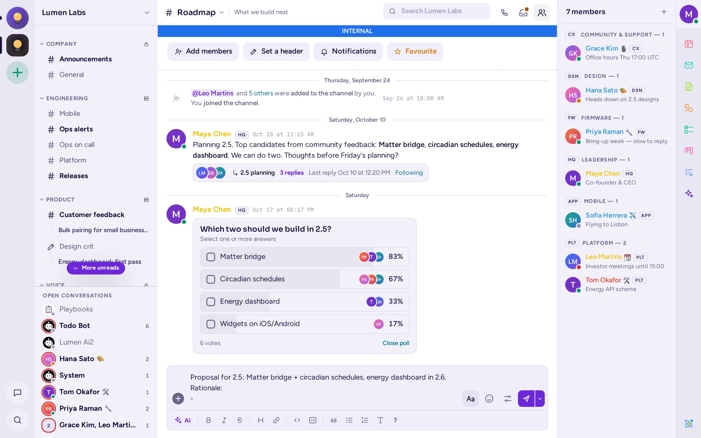
역할과 배지, 자체 규칙을 갖춘 커뮤니티
회사든 커뮤니티든 운영할 수 있습니다. Antimatter에는 새로운 사람을 맞이하고 쾌적한 공간을 유지하는 도구가 갖춰져 있습니다.
- 표시 역할과 팀 배지: 색상이 있는 역할, 사용자가 직접 고르는 역할, 이름 옆에 표시되는 배지.
- 온보딩: 환영 화면과 질문을 통해 새로 온 사람에게 알맞은 역할과 채널을 부여합니다.
- 서버의 권한 체계 위에 카테고리별, 채널별로 적용하는 권한 재정의.
- 모더레이션: 타임아웃, 모더레이터 보기, 메시지 신고, 격리.
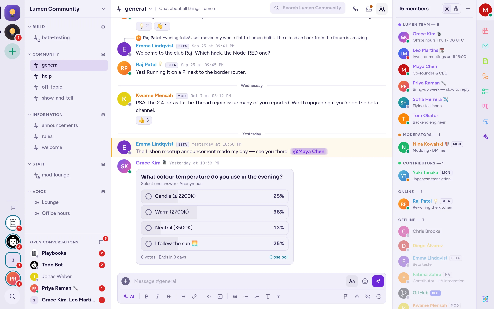
협업 앱이 기본으로
앱은 채팅 옆 패널이나 별도 창에서 열리며, 채널에 공유한 내용은 그 채널의 모든 사람에게 실시간으로 반영됩니다.

메모
제목, 목록, 체크리스트, 코드를 넣어 실시간으로 함께 편집하는 문서입니다. 혼자 간직하거나 채널에 공유하세요.

화이트보드
도형, 화살표, 텍스트, 여러분의 관리자가 추가하는 도형 라이브러리, 그리고 모두의 커서가 보이는 공유 캔버스로, 외부 서비스에는 전혀 연결하지 않습니다.

칸반
카드, 속성, 보기를 갖춘 프로젝트용 보드, 표, 캘린더입니다. 프로젝트를 진행하는 채널과 연결됩니다.

플레이북
장애 대응, 릴리스, 온보딩을 위한 체크리스트입니다. 담당자 지정, 상태 업데이트, 회고를 지원합니다.
할 일 목록
개인 작업과 공유 작업을 어떤 메시지에서든 할당하세요.
캘린더
채팅 옆에 CalDAV 캘린더를 두고 리마인더와 통화 링크까지.
메일
IMAP과 SMTP로 연결한 메일함을 앱 안에서.
투표
단일 선택 또는 복수 선택, 마감 시간과 실시간 결과.
여러분이 정한 곳에서 실행되는 AI
요청할 때는 돕고, 그 밖에는 조용히 있습니다. Antimatter의 에이전트는 OpenAI, Anthropic, Azure, Mistral, Gemini, Bedrock은 물론 vLLM, llama.cpp, Ollama처럼 직접 운영하는 OpenAI 호환 서버와도 함께 작동합니다.

쓰면서 다시 쓰고, 고치고, 번역하기
메시지를 보내기 전에 입력창에서 맞춤법과 문법을 고치고, 줄이고, 더 명확하게 다듬고, 어조를 바꾸거나 번역해 달라고 요청하세요.

에이전트 패널
어느 채널 옆에서든 에이전트와 대화하세요. 채널을 요약하고, 결정 사항을 찾고, 답장 초안을 쓰고, MCP 서버를 통해 도구를 사용할 수 있습니다.

통화 녹취록과 요약
통화 내용은 자체 음성 인식 모델이 받아 적어 실시간 자막으로 보여 주고, 이후 녹취록과 AI 요약을 통화의 글타래에 게시합니다.
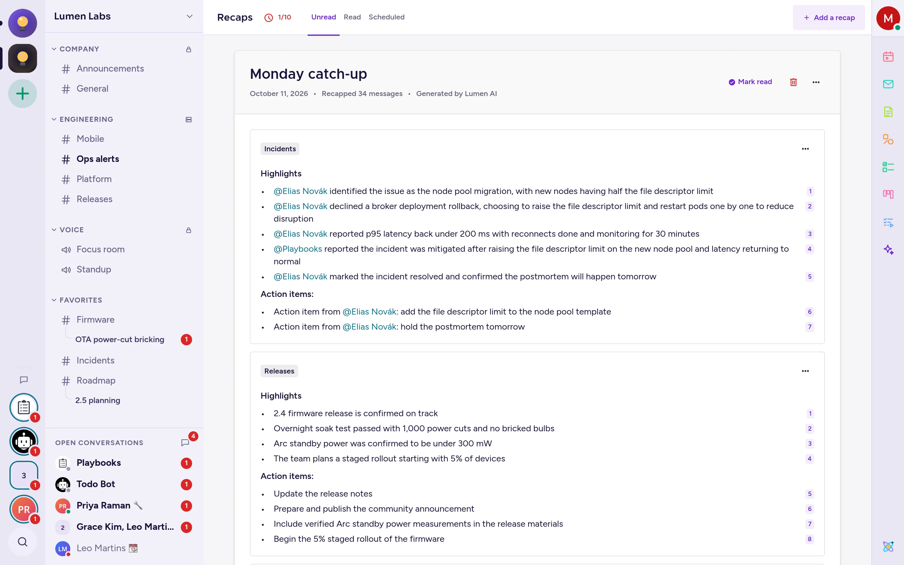
리캡과 채널 요약
휴가에서 돌아오면 원하는 채널의 리캡과 긴 글타래의 요약으로 빠르게 따라잡으세요.
자동 번역
LibreTranslate나 OpenAI 호환 모델로 채널을 읽는 사람 각자의 언어로 번역합니다.
소리 내어 읽기
자체 음성 합성 모델로 어떤 메시지든 소리 내어 읽어 줍니다.
스마트 답장
에이전트가 지정한 채널에서 팀의 권한에 따라 답변할 수 있습니다.
언제나 열려 있는 음성 채널
음성 채널은 다른 채널처럼 사이드바에 있습니다. 클릭해서 들어가면 누가 있는지 보이고, 바로 대화할 수 있습니다. 통화는 어떤 대화에서든 시작할 수 있습니다.
- 영상, 화면 공유, 배경 흐림, 코드나 슬라이드 공유에 맞춘 화질 프리셋.
- 순서대로 대기하는 손 들기, 반응, 사람별 볼륨 조절.
- 눌러서 말하기, 호스트 제어, 별도 통화 창.
- 추가 인프라 없이 자체 음성 인식 서버로 만드는 실시간 자막과 녹취록.
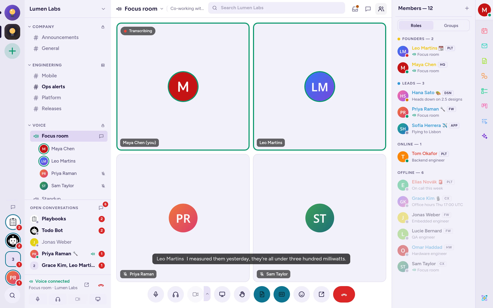
쓰던 도구를 채널 안으로
완전한 REST API와 플러그인 시스템, 그리고 자체 연동 기능을 갖췄습니다.
- GitHub, GitLab, Jira 구독, 미리보기, 슬래시 명령.
- 들어오는 웹훅과 나가는 웹훅, 슬래시 명령, 봇, OAuth 앱.
- 대화형 메시지와 대화창: 서비스로 결과를 돌려보내는 버튼, 메뉴, 양식.
- Antimatter 인터페이스에 앱, 패널, 명령, 메시지 유형을 추가하는 플러그인.
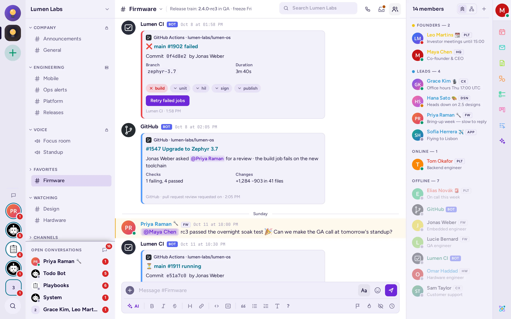
관리자가 기대하는 모든 것
모든 설정을 모든 서버에서 쓸 수 있는 완전한 시스템 콘솔.
- 인증: SAML 2.0, OpenID Connect, Google, Microsoft Entra, LDAP/Active Directory, MFA.
- 액세스 제어: 권한 체계, 속성 기반 액세스, 게스트 계정, IP 필터링.
- 컴플라이언스: 데이터 보존, 컴플라이언스 내보내기와 메시지 내보내기, 감사 로깅.
- 운영: Elasticsearch 또는 OpenSearch 검색, Prometheus 메트릭, S3 호환 파일 스토리지.
- 브랜딩: 사이트 이름, 로고, 로그인 문구, 커스텀 이모지와 테마.
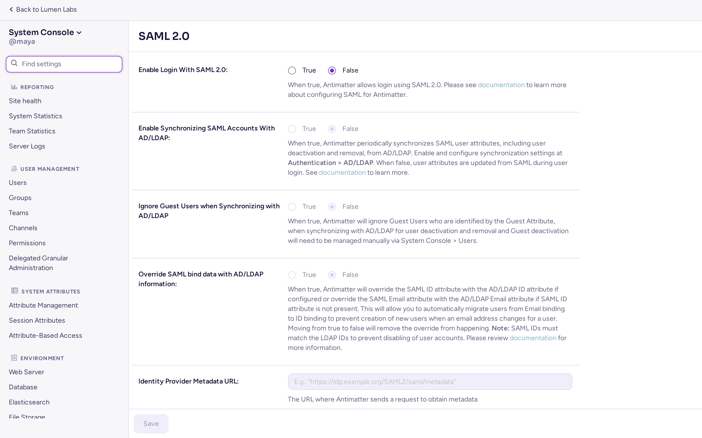
사람들이 알아보는 작은 차이
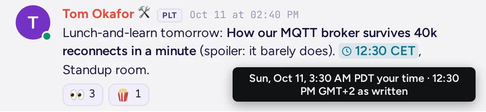
내 시간대로 보는 시각
메시지에 "3pm CET"라고 쓰면 읽는 사람마다 자기 시간으로 표시됩니다.
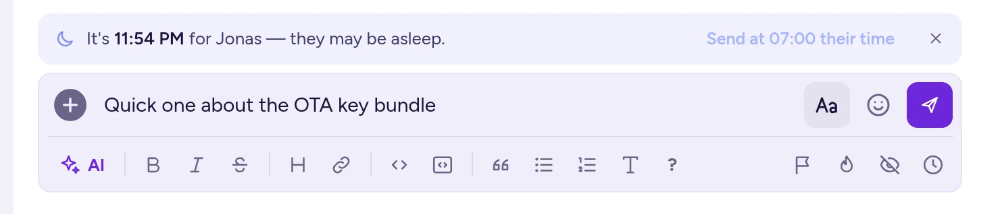
"자고 있을 수 있어요"
메시지를 받을 사람이 한밤중이면 안내가 표시되고, 버튼 하나로 그 사람의 아침에 보낼 수 있습니다.
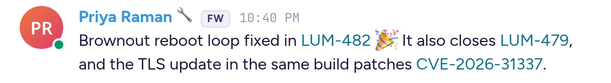
자동 링크
커뮤니티마다 티켓 키 같은 패턴을 정해 두면, 메시지를 올릴 때 링크로 바뀝니다.
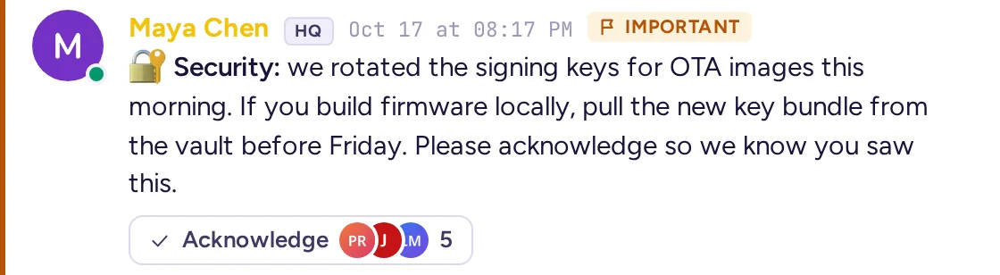
확인 요청
중요한 메시지에 확인을 요청하고, 누가 확인했는지 살펴보세요.
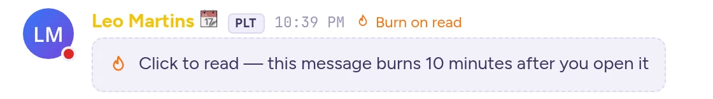
읽은 후 삭제
읽고 나면 사라지는 민감한 메시지.
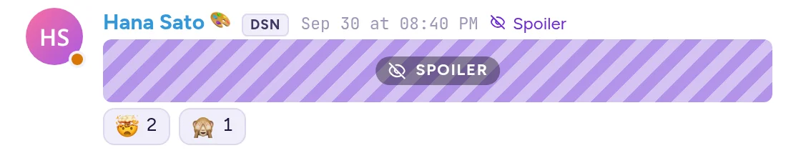
스포일러
읽는 사람이 직접 열어 보기 전까지 가려집니다.

대화별 받은편지함
대화마다 멘션, 저장된 메시지와 고정된 메시지, 파일, 글타래를 대화 헤더에서 클릭 한 번으로 볼 수 있습니다. 한 번 더 클릭하면 커뮤니티 전체의 것이 표시됩니다.
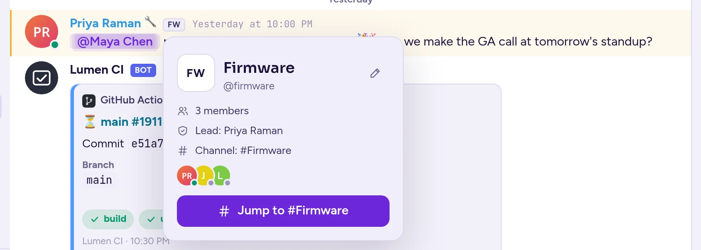
팀 배지
이름 옆 팀 배지를 클릭하면 팀과 팀 리더, 멤버를 확인하고 팀 채널로 바로 이동할 수 있습니다.
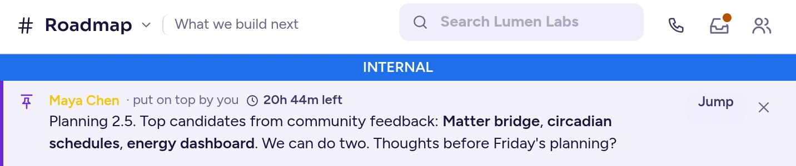
맨 위에 올리기
중요한 메시지를 1시간, 하루, 일주일 동안 또는 내릴 때까지 대화 위에 올려 모두에게 보여 주세요.
리마인더
메시지 메뉴에서 설정하면 나중에 그 메시지를 다시 알려 줍니다.
상대방 아침에 보내기
받는 사람의 근무 시간에 맞춰 메시지를 예약하세요.
나에게 메모
메시지를 전달해 두고 메모를 남기는 나만의 공간.
스트리머 모드
화면을 공유하는 동안 개인 정보를 숨깁니다.
38개 언어
아랍어, 히브리어, 페르시아어, 우르두어의 오른쪽에서 왼쪽 레이아웃까지 지원합니다.
나만의 GIF와 스티커
서버에 직접 호스팅하는 컬렉션, 추적은 없습니다.
테마
시스템 설정을 따르는 다크, 라이트, OLED 테마와 공유할 수 있는 커스텀 테마.
밈
이모지 선택기에서 60가지 템플릿 중 하나를 고르고, 문구를 써서 밈을 올리세요.
사람에 대한 비공개 메모
누가 누구인지 기억해 두세요. 나에게만 보입니다.
채널 내보내기
채널 메뉴나 /export로 채널의 메시지를 스프레드시트 파일로 내려받으세요.
이름 붙인 글타래
글타래에 이름을 붙이면 채널의 하위 대화가 되어, 팔로우하는 사람들의 사이드바에 표시됩니다.
커뮤니티 폴더
왼쪽 끝 커뮤니티 바에서 커뮤니티를 폴더로 묶으세요.